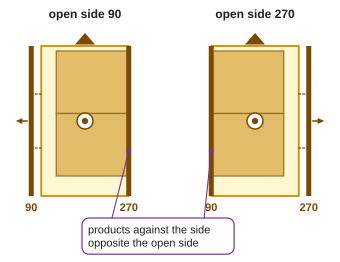
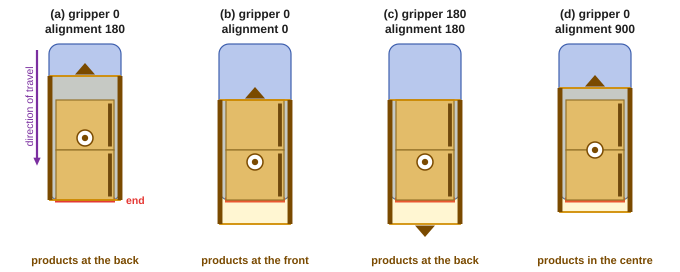

Open side and alignment
OpenPallet 1.2The open side (90 or 270) is the side of the gripper that stays free: with the opposite side the gripper sets the products against those already placed. The alignment (0, 180, 900) tells at which end of the gripper the products lie. Both belong to the gripper and count in its frame.


- Open side (
gripper_open_side): 90 or 270. With open side 270 the products lie against side 90, and with that side the gripper sets them against those already placed. Side 270 stays free, unless the station settings say otherwise. - Jaw gripper: the side of the moving jaw. Fork gripper: the side the forks come in from. Another kind: the side with the parts that could collide with the neighbouring products.
- When both sides move, the station allows both (
gripper.allowed_open_side). - 900: a gripper without an open side (from above). 999: not assigned.
- Alignment (
gripper_align): 0 = products at the gripper's front, 180 = at its back, 900 = in the centre. - 900 is not a direction: in the alignment it means the gripper centred on the products.

| JSON | PLC (tPlacingData, move data) |
CSV column | |
|---|---|---|---|
| open side | gripper_open_side: 90, 270, 900 |
i16GripperOpenSide: 90, 270, 900 |
GripperOpenSide |
| alignment | gripper_align: 0, 180, 900 |
i16GripperAlign: 0, 180, 900 |
GripperAlign |